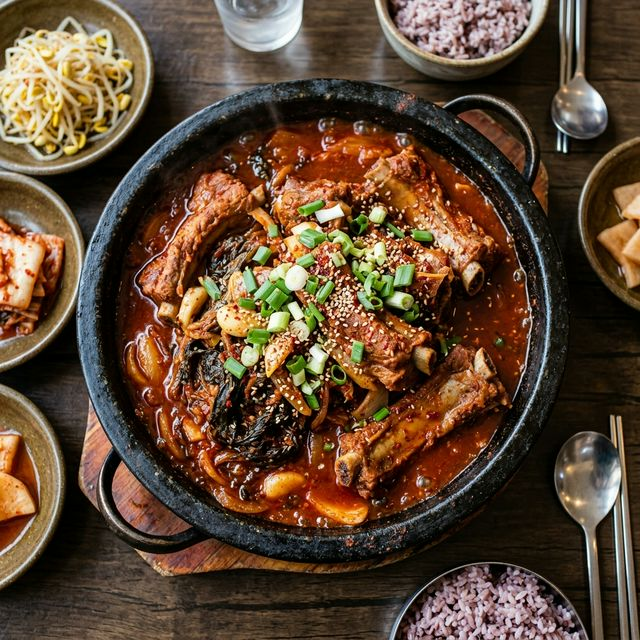
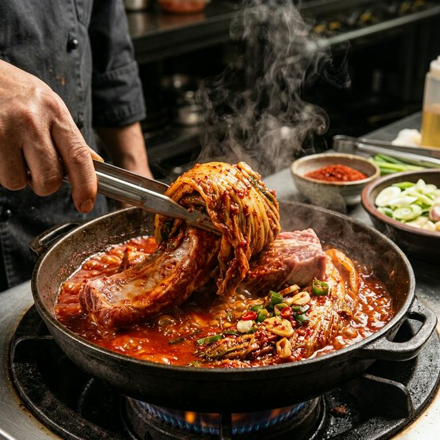

날씨가 쌀쌀해지거나 기운이 없을 때, 우리 한국인의 영혼을 달래주는 음식 중 압도적인 존재감을 뽐내는 메뉴가 있습니다. 바로 '묵은지 돼지등갈비찜'입니다. 1년 이상 정성껏 숙성된 묵은지의 깊은 산미가
돼지 등갈비의 묵직한 지방과 만나면, 그 어디에서도 맛볼 수 없는 환상적인 감칠맛의 밸런스가 탄생합니다. 등갈비 고유의 쫄깃한 식감과 김치의 아삭함, 그리고 은근한 불에서 오래 끓여내 재료 본연의 맛이
충분히 우러난 진한 국물은 갓 지은 하얀 쌀밥과 최고의 궁합을 자랑합니다.
하지만 집에서 만들다 보면 고기가 질겨지거나 김치 특유의 군내가 나서 고민인 분들이 많으실 겁니다. 오늘 소개해 드릴 레시피는 전문 셰프들이 사용하는 '슬로우 쿠킹' 기법을 가정용 주방에 맞게 최적화한
버전입니다. 고기의 누린내를 완벽히 잡는 전처리 과정부터, 묵은지의 과한 산미를 부드럽게 중화시키는 비법 양념장까지, 실패 없는 묵은지 등갈비찜의 모든 비밀을 단계별로 아낌없이 공개해 드립니다. 오늘
저녁, 가족들의 찬사를 한 몸에 받을 준비가 되셨나요?

[ 깊고 진한 맛과 화려한 색감이 살아있는 셰프 스타일의 묵은지
돼지등갈비찜 / AI 제작 이미지 ]
1. 재료 준비 매뉴얼: 신선함이 곧 맛의 시작입니다
성공적인 등갈비찜을 위해 최우선으로 고려해야 할 것은 식재료의 퀄리티입니다. 특히 등갈비는 지방과 살코기가 적절히 조화된 신선한 냉장육을 선택하는 것이 좋습니다. 냉동육의 경우 해동 과정에서 육즙이 손실되어
고기가 퍽퍽해질 우려가 크기 때문입니다. 주재료인 묵은지는 속을 가볍게 털어내어 준비하며, 김치 국물도 버리지 않고 1컵 정도 따로 모아두면 국물의 깊은 맛을 내는 훌륭한 천연 소스가 됩니다.
야채의 경우 대파와 양파는 국물의 시원함과 천연 당분을 책임집니다. 특히 청양고추는 묵은지의 산미와 고기의 느끼함을 동시에 잡아주는 '킥' 역할을 하므로 취향에 따라 양을 조절하여 꼭 넣어주시길 권장합니다.
모든 재료는 조리 전 실온에 잠시 두어 온도를 맞춰두면 열 전도가 고르게 일어나 고기가 훨씬 부드럽게 익는 효과가 있습니다. 아래의 재료 리스트를 확인하여 꼼꼼하게 준비해 보세요.
🍖 주재료
돼지 등갈비 1kg, 묵은지 1/4포기
🌿 채소류
대파 1대, 양파 1/2개, 청양고추 2개, 홍고추 1개
🥣 육수
기초
쌀뜨물 800ml, 김치 국물 1컵
2. 양념장 비법 비율: 묵은지의 산미를 지배하는 황금 레시피
묵은지 등갈비찜의 양념은 일반적인 고기찜보다 설탕 비중이 약간 더 높아야 합니다. 이는 묵은지의 강한 산성 성분을 중화시켜 감칠맛으로 승화시키기 위함입니다. 고춧가루는 고운 고춧가루와 굵은 고춧가루를 1:1
비율로 섞어서 사용하면 색감이 훨씬 더 선명해지고 국물의 농도가 걸쭉하게 잘 잡힙니다. 다진 마늘은 듬뿍 넣을수록 고기의 잡내 차단에 효과적입니다.
감칠맛을 극대화하고 싶다면 액젓을 활용해 보세요. 멸치액젓이나 까나리액젓 1큰술은 양념에 깊은 풍미를 더해줍니다. 또한 생강청이나 생강즙을 아주 소량 첨가하면 고기의 풍미가 한층 고급스럽게 변합니다. 모든
양념 재료를 미리 섞어서 30분 정도 상온에서 숙성시킨 뒤 사용하면 고춧가루가 충분히 불어 국물에 겉돌지 않고 재료에 착 달라붙는 일체감을 느낄 수 있습니다.
고급 한식의 차이는 '손질'에서 결정됩니다. 등갈비는 뼈 마디마다 잘라 찬물에 담가 빗물을 제거해야 합니다. 최소 1시간 이상, 중간에 물을 두세 번 갈아주며 핏물을 빼주는 과정이 없으면 끓인 후에도 국물에서
쿰쿰한 냄새가 날 수 있습니다. 핏물을 뺀 등갈비는 월계수 잎과 통후추, 맛술을 넣은 끓는 물에 약 5분간 애벌 삶기를 진행합니다. 이때 고기가 속까지 익을 필요는 없으며 표면의 불순물과 기름기를 제거하는
것이 목적입니다.
애벌 삶기를 마친 등갈비는 찬물에 하나씩 정성껏 씻어냅니다. 뼈 단면의 응고된 피를 꼼꼼히 닦아내야 국물이 탁해지지 않습니다. 씻은 고기는 물기를 빼서 준비합니다. 묵은지는 배추 꽁지 부분만 잘라내고 길쭉하게
준비하여 나중에 고기를 말아 먹을 수 있도록 세로로 길게 결을 살려줍니다. 이러한 꼼꼼한 전처리가 곧 완성된 요리의 '격'을 결정하는 중요한 요소임을 명심하세요.
또한, 등갈비 안쪽의 얇은 근막을 제거하면 양념이 뼈 속까지 훨씬 더 잘 배어들고 식감이 부드러워집니다. 칼끝이나 핀셋을 이용해 근막 한쪽 끝을 잡고 천천히 잡아당기면 쉽게 제거할 수 있습니다. 작은
디테일이지만 이 과정을 거친 등갈비는 입안에서 뼈가 쏙 분리되는 짜릿한 쾌감을 선사할 것입니다. 모든 준비가 끝났다면 이제 본격적인 조리의 세계로 들어가 보겠습니다.

[ 묵은지와 등갈비가 어우러져 깊은 맛을 뿜어내는 메인 졸임 단계
/ AI 제작 이미지 ]
4. Step-by-Step 조리 가이드: 정성의 시간이 빚어내는 깊은 맛
Step 1. 냄비 기본 세팅 (Bottom Layering)
바닥이 두꺼운 냄비(또는 무쇠솥) 바닥에 양파를 깔고 그 위에 손질한 묵은지의 1/2을 넉넉히 펼쳐줍니다. 그 위에 애벌 삶기한 등갈비를 차곡차곡 쌓아 올립니다. 나머지 묵은지로 고기를 덮어주어 찜통과 같은
효과를 냅니다. 이렇게 하면 가열 시 묵은지로부터 우러나온 양념과 육즙이 고기에 직접적으로 스며들어 풍미가 배가됩니다.
Step 2. 육수 투입 및 1차 가열 (Initial Boil)
준비한 쌀뜨물 800ml와 김치 국물 1컵을 냄비 가장자리로 천천히 붓습니다. 미리 만들어둔 양념장을 고르게 끼얹은 뒤 뚜껑을 닫고 센 불에서 끓이기 시작합니다. 국물이 팔팔 끓어오르면 5분 정도 유지하며
재료들이 어우러지게 합니다. 이때 올라오는 거품은 가볍게 걷어내면 더욱 깔끔한 맛을 유지할 수 있습니다.
Step 3. 슬로우 쿠킹: 인내의 중약불 (Simmering)
불을 중약불로 줄이고 최소 40분에서 1시간 동안 뭉근하게 끓여줍니다. 이것이 바로 '슬로우 쿠킹'의 핵심입니다. 묵은지가 투명하게 익고 등갈비 살이 뼈에서 헐거워질 때까지 시간이 필요합니다. 국물이 너무
졸아들면 쌀뜨물을 조금씩 보충하며 농도를 조절합니다. 중간중간 고기를 위아래로 한 번씩 뒤집어주면 양념이 고르게 배어드는 효과가 있습니다. 오랜 시간 끓일수록 묵은지의 식감은 부드러워지고 국물은 녹진한 농도를
갖추게 됩니다.
5. 마무리의 디테일: 불 맛과 풍미의 마지막 한 끗
조리가 거의 끝나갈 무렵(마지막 10분 전), 어긋썰기한 대파와 청양고추를 투입합니다. 야채의 아삭한 식감이 살짝 남아있을 때가 가장 보기에 좋습니다. 국물이 자작하게 줄어들고 고기 표면에 윤기가 돌기
시작하면 들기름 1큰술을 둘러 풍미를 한 단계 더 높여주세요. 들기름은 고소한 향뿐만 아니라 묵은지의 강한 첫 향을 부드럽게 감싸주는 완벽한 코팅막이 됩니다.
간을 최종 확인하고 부족하다면 입맛에 맞게 국간장이나 소금으로 조절합니다. 만약 묵은지가 너무 시어서 끝맛이 날카롭다면 설탕을 반 큰술만 더 추가해 보세요. 맛이 비약적으로 부드러워질 것입니다. 불을 끄기
직전 통깨를 듬뿍 뿌려 시각적인 완성도까지 갖춰줍니다. 냄비째 식탁에 올려 김이 모락모락 나는 상태에서 식사를 시작하는 것이 이 요리를 대하는 가장 정중한 자세입니다.
⚠️ 체크포인트 (Caution)
화력 주의: 바닥이 타지 않도록 불 조절에 유의하세요. 수분이 부족하면 즉시 쌀뜨물을 보충합니다.
간 조절: 묵은지마다 염도가 다르므로 처음부터 간장을 많이 넣지 말고 조리 후에 맞춰주세요.
삶기 시간: 등갈비의 뼈가 쏙 빠지는 느낌을 원하신다면 1시간 이상 뭉근히 조리하는 것이 필수입니다.
6. 전문가의 비밀 팁: 레시피의 완성도를 높이는 3가지 기술
첫째, 쌀뜨물의 힘입니다. 맹물 대신 쌀뜨물을 사용하면 전분 성분이 국물의 농도를 부드럽게 잡아주고, 돼지 고기의 단백질 성분과 어우러져 훨씬 깊고 구수한 맛을 냅니다. 둘째,
시간차 공격입니다. 고기를 먹을 때는 묵은지 한 줄기를 길게 찢어 등갈비에 돌돌 말아 한입에 드셔보세요. 각각 따로 먹는 것과는 비교불가한 텍스처와 맛의 하모니를 느끼실 수
있습니다.
셋째, 만약 묵은지의 군내가 심하다면 쌀뜨물에 담가두었다가 사용하거나, 조리 시 설탕과 함께 청주 또는 소주를 넉넉히 넣고 초기 가열 시 뚜껑을 열어두어 잡냄새를 날려 보내는
것이 좋습니다. 대한다원의 차밭에서 초록의 여유를 즐기듯, 주방에서도 서두르지 않는 여유를 가져보세요. 요리는 결국 '시간'이라는 양념이 들어가야 비로소 완성품이 됩니다.
📸 Placeholder: 재료 구성 및 전처리 샷
Fresh ingredients for Mukeunji pork ribs: raw pork back ribs, a whole aged kimchi, ginger, garlic, leeks,
and red pepper flakes on a wooden cutting board, clean and bright arrangement.
[ 신선한 주재료와 기본 양념 채소들이 준비된 전처리 단계 / AI
제작 이미지 ]
7. 페어링 제안: 묵은지 등갈비찜과 함께하면 좋은 것들
이 풍성하고 매콤한 요리에는 달걀말이나 달걀찜과 같은 부드러운 반찬이 최고의 짝꿍입니다. 자칫 자극적일 수 있는 묵은지의 맛을 중화시켜주며 영양학적
균형도 완벽하게 잡아줍니다. 만약 주류를 곁들이고 싶다면 묵직한 바디감의 막걸리나, 산소감이 살아있는 맥주보다는 소주 한 잔이 이 원초적인 고기 맛을 더욱 선명하게 돋보이게 해줄 것입니다.
건강적인 측면에서 보면, 묵은지는 유산균과 풍부한 영양소를 함유하고 있으며 등갈비는 필수 아미노산이 가득한 에너지원이 됩니다. 하지만 나트륨 함량이 높을 수 있으므로 식사 후에는 시원한 오이냉국이나 따뜻한
녹차 한 잔으로 입가심을 하는 것이 좋습니다. 정성이 담긴 한 끼 식사가 주는 위로, 오늘 소개해 드린 묵은지 돼지등갈비찜으로 사랑하는 사람들과 따뜻한 시간을 나누어 보시기 바랍니다.